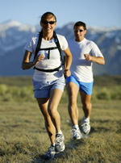
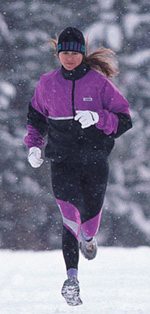

Tips for a Safe Running Program
Although running injuries are quite common, you can reduce your risk for injury. Be sure to follow the proper conditioning and training programs, wear the appropriate apparel and footwear, and be aware of your running environment.
- Run in the shade, if possible, to avoid direct sun. If exposed to the sun, apply at least SPF 15 sunscreen. Wear sunglasses to filter out UVA and UVB rays, and wear a hat with a visor to shade your eyes and face.
- During hot weather, run in the early morning or evening to avoid heat exhaustion. Do not run when pollution levels are high.
- In high altitudes, gradually acclimate yourself to lower oxygen levels by slowly increasing your speed and distance.
- In cool weather, you are less likely to get chilled if you run into the wind when you start running and run with the wind at the finish.
- Do not run at night. If you run at dusk or dawn, wear reflective material. Do not wear a headset or jewelry while running.
- Whenever possible, run on a clear, smooth, resilient, even, and reasonably soft surface. Avoid running on hills, which increases stress on the ankle and foot. When running on a curve, such as a running track, reverse directions halfway through your run so that you have even pressure on both feet during the run.

- Plan a progressive running program to prevent injuries. A five-minute warm-up (which should raise your temperature by one degree) followed by stretching exercises, is essential before starting a run. Following the run, stretching again is important.
- Start your run with your body feeling "a little cool." Your body temperature will increase when you start running.
- Run with a partner. If alone, carry identification, or write your name, phone number, blood type, and medical information on the inside sole of your running shoe.
- Let others know where you will be running, and stay in familiar areas, away from traffic. If possible, carry a small bag for a cell phone and a whistle or other noisemaker to use in an emergency.
- When selecting a running shoe, look for good shock absorption and construction that will provide stability and cushioning to the foot. Make sure that there is a thumbnail's width between the end of the longest toe and the end of the shoe. Buy shoes at the end of the day when your foot is the largest.
- Sixty percent of a shoe's shock absorption is lost after 250 to 500 miles of use, so people who run up to 10 miles per week should consider replacing their shoes every 9 to 12 months.
- Excessive clothing can produce sweating, which causes the body to lose heat rapidly and can increase the risk of hypothermia. Instead, dress in layers. The inner layer should be material that takes perspiration away from the skin (polypropylene, thermal); the middle layer (not necessary for legs) should be for insulation and absorbing moisture (cotton); the outer layer should protect against wind and moisture (nylon).
- To avoid frostbite in cold weather, do not have gaps of bare skin between gloves and jackets, wear a hat, and cover your neck. Petroleum jelly can be used on exposed areas, such as the nose.

- You can lose between six and 12 ounces of fluid for every 20 minutes of running. Drink 10 to 15 ounces of fluid 10 to 15 minutes prior to running and every 20 to 30 minutes along your route. Weigh yourself before and after a run. For every pound lost, drink one pint of fluid.
Sources of some information include: U.S.A. Track and Field Association, Road Runners Club of America,
and American Orthopaedic Society for Sports Medicine
Photo copyright ©2010, Getty Images.
Last reviewed:July 2011
Copyright 2011 American Academy of Orthopaedic Surgeons